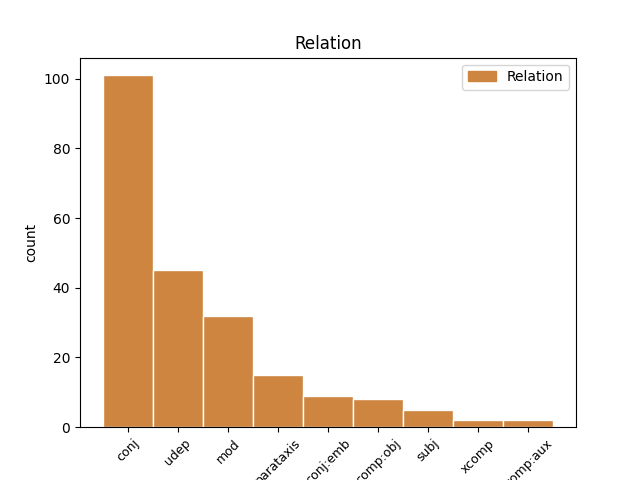
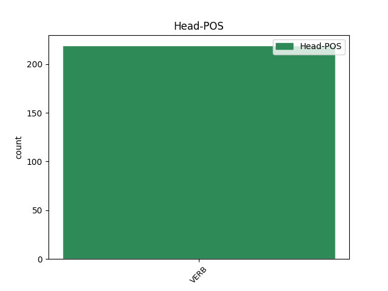
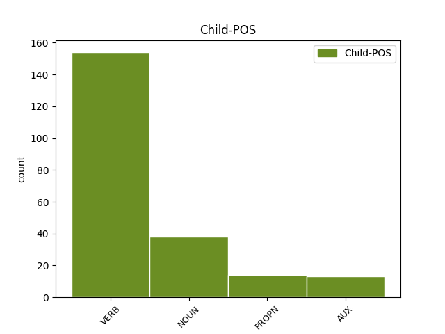

Distribution of features within this leaf



Agreement Rules sorted by frequency.
- When the dependent token is the conjunct(conj) of the head token, and the head token is VERB and the dependent token is VERB.
1 Я _ _ _ _ 0 _ _ _
2 не _ _ _ _ 0 _ _ _
3 дышу дышуть VERB _ Aspect=Imp|Mood=Ind|Number=Sing|Person=1|Tense=Pres|VerbForm=Fin|Voice=Act 0 _ _ _
4 , _ _ _ _ 0 _ _ _
5 а _ _ _ _ 0 _ _ _
6 пью пить VERB _ Aspect=Imp|Mood=Ind|Number=Sing|Person=1|Tense=Pres|VerbForm=Fin|Voice=Act 3 conj _ _
7 благоуханье _ _ _ _ 0 _ _ _
8 Моей _ _ _ _ 0 _ _ _
9 земли _ _ _ _ 0 _ _ _
10 равнинной _ _ _ _ 0 _ _ _
11 и _ _ _ _ 0 _ _ _
12 лесной _ _ _ _ 0 _ _ _
13 . _ _ _ _ 0 _ _ _
1 Энэниие _ _ _ _ 0 _ _ _
2 сахилгаан _ _ _ _ 0 _ _ _
3 орондо _ _ _ _ 0 _ _ _
4 оруулбал _ _ _ _ 0 _ _ _
5 электрон _ _ _ _ 0 _ _ _
6 , _ _ _ _ 0 _ _ _
7 нүхэн _ _ _ _ 0 _ _ _
8 харилсан _ _ _ _ 0 _ _ _
9 эсэргүү _ _ _ _ 0 _ _ _
10 шэглэлдэ шэглэл NOUN _ Case=Ins|Number=Sing|Person=3 11 udep _ _
11 хүдэлнэ хүдэ VERB _ Mood=Ind|Number=Sing|Person=3|Tense=Aor|VerbForm=Fin 0 _ _ _
12 . _ _ _ _ 0 _ _ _
1 Ябадалай _ _ _ _ 0 _ _ _
2 үрнил _ _ _ _ 0 _ _ _
3 Өөрынгөө _ _ _ _ 0 _ _ _
4 нүхэр _ _ _ _ 0 _ _ _
5 Энкидугэй _ _ _ _ 0 _ _ _
6 үхэлдэ _ _ _ _ 0 _ _ _
7 сошордоһон _ _ _ _ 0 _ _ _
8 Урукай _ _ _ _ 0 _ _ _
9 Гильгамеш _ _ _ _ 0 _ _ _
10 хаан _ _ _ _ 0 _ _ _
11 үхэшэгүй _ _ _ _ 0 _ _ _
12 мүнхын _ _ _ _ 0 _ _ _
13 эрэлдэ _ _ _ _ 0 _ _ _
14 Шумер _ _ _ _ 0 _ _ _
15 « _ _ _ _ 0 _ _ _
16 мүнөөнэй _ _ _ _ 0 _ _ _
17 Ирик _ _ _ _ 0 _ _ _
18 » _ _ _ _ 0 _ _ _
19 руу _ _ _ _ 0 _ _ _
20 ябаһан _ _ _ _ 0 _ _ _
21 Гильгамеш _ _ _ _ 0 _ _ _
22 сэсэн сэ VERB _ Mood=Ind|Number=Sing|Person=3|Tense=Past|VerbForm=Fin 30 mod _ _
23 мэргэн _ _ _ _ 0 _ _ _
24 бурханиие _ _ _ _ 0 _ _ _
25 туһаламжатайгаар _ _ _ _ 0 _ _ _
26 үерые _ _ _ _ 0 _ _ _
27 тэсбэрилэн _ _ _ _ 0 _ _ _
28 шадаһан _ _ _ _ 0 _ _ _
29 Утнапиштимтэй _ _ _ _ 0 _ _ _
30 уулзаһан уулзаһ VERB _ Mood=Ind|Number=Sing|Person=3|Tense=Past|VerbForm=Fin 0 _ _ _
31 . _ _ _ _ 0 _ _ _
1 Энэ _ _ _ _ 0 _ _ _
2 хадаа хадаа VERB _ Aspect=Imp|Mood=Ind|Number=Sing|Person=3|Tense=Pres|VerbForm=Fin|Voice=Act 0 _ _ _
3 буряад буряад VERB _ Aspect=Imp|Mood=Ind|Number=Sing|Person=3|Tense=Pres|VerbForm=Fin|Voice=Act 2 parataxis _ _
4 Википеэди _ _ _ _ 0 _ _ _
5 . _ _ _ _ 0 _ _ _
1 Хаанай _ _ _ _ 0 _ _ _
2 элдэб _ _ _ _ 0 _ _ _
3 түшэмэлнүүд _ _ _ _ 0 _ _ _
4 болон _ _ _ _ 0 _ _ _
5 элдэб _ _ _ _ 0 _ _ _
6 баяд _ _ _ _ 0 _ _ _
7 ноёдойнь _ _ _ _ 0 _ _ _
8 Сагаан _ _ _ _ 0 _ _ _
9 һарада _ _ _ _ 0 _ _ _
10 хаандаа _ _ _ _ 0 _ _ _
11 яажа _ _ _ _ 0 _ _ _
12 , _ _ _ _ 0 _ _ _
13 бэлэг _ _ _ _ 0 _ _ _
14 үгэдэг үгэд VERB _ Aspect=Hab|Mood=Ind|Number=Sing|Person=3|Polarity=Neg|Tense=Pres 0 _ _ _
15 , _ _ _ _ 0 _ _ _
16 энэ _ _ _ _ 0 _ _ _
17 найраа _ _ _ _ 0 _ _ _
18 үнгэргэдэг үнгэргэд VERB _ Aspect=Hab|Mood=Ind|Number=Sing|Person=3|Polarity=Neg|Tense=Pres 14 conj:emb _ _
19 тухайнь _ _ _ _ 0 _ _ _
20 бэшэнэ _ _ _ _ 0 _ _ _
21 . _ _ _ _ 0 _ _ _
1 Эхинэй _ _ _ _ 0 _ _ _
2 үедээ _ _ _ _ 0 _ _ _
3 тэдэнэй _ _ _ _ 0 _ _ _
4 уулзалтууд _ _ _ _ 0 _ _ _
5 Иерусалимда Иерусалим PROPN _ Case=Loc|Number=Sing|Person=3 9 udep _ _
6 маша _ _ _ _ 0 _ _ _
7 нюусаар _ _ _ _ 0 _ _ _
8 ябагдадаг _ _ _ _ 0 _ _ _
9 байһанаа байһан VERB _ Mood=Ind|Number=Sing|Person=3|Tense=Pqp|VerbForm=Fin|Voice=Act 0 _ _ _
10 , _ _ _ _ 0 _ _ _
11 удалгүй _ _ _ _ 0 _ _ _
12 олон _ _ _ _ 0 _ _ _
13 тооной _ _ _ _ 0 _ _ _
14 ниигэмлигүүд _ _ _ _ 0 _ _ _
15 болобо _ _ _ _ 0 _ _ _
16 . _ _ _ _ 0 _ _ _
1 Эртын _ _ _ _ 0 _ _ _
2 Ромада _ _ _ _ 0 _ _ _
3 бүри бүр VERB _ Mood=Ind|Number=Sing|Person=3|Tense=Past|VerbForm=Fin 0 _ _ _
4 талханай _ _ _ _ 0 _ _ _
5 алаабхи _ _ _ _ 0 _ _ _
6 хүрэтэр _ _ _ _ 0 _ _ _
7 бии _ _ _ _ 0 _ _ _
8 болоо бол AUX _ Mood=Ind|Number=Sing|Person=3|Tense=Past|VerbForm=Fin 3 conj _ _
9 һэн _ _ _ _ 0 _ _ _
10 . _ _ _ _ 0 _ _ _
1 ЮНЕСКО _ _ _ _ 0 _ _ _
2 - _ _ _ _ 0 _ _ _
3 гэй _ _ _ _ 0 _ _ _
4 танилсуулгада _ _ _ _ 0 _ _ _
5 сампин _ _ _ _ 0 _ _ _
6 бол _ _ _ _ 0 _ _ _
7 Хитадай _ _ _ _ 0 _ _ _
8 эртэнэй _ _ _ _ 0 _ _ _
9 ехэ _ _ _ _ 0 _ _ _
10 нээлтэ _ _ _ _ 0 _ _ _
11 болоод _ _ _ _ 0 _ _ _
12 1800 _ _ _ _ 0 _ _ _
13 тухай _ _ _ _ 0 _ _ _
14 жэлэй _ _ _ _ 0 _ _ _
15 турша _ _ _ _ 0 _ _ _
16 хамагай _ _ _ _ 0 _ _ _
17 түргэн _ _ _ _ 0 _ _ _
18 тоосоолон _ _ _ _ 0 _ _ _
19 бододог _ _ _ _ 0 _ _ _
20 үйлэдэлээрээ _ _ _ _ 0 _ _ _
21 дэлхэйн _ _ _ _ 0 _ _ _
22 хамагай _ _ _ _ 0 _ _ _
23 эртэнэй _ _ _ _ 0 _ _ _
24 тоосоолон _ _ _ _ 0 _ _ _
25 бодохо _ _ _ _ 0 _ _ _
26 хэрэгсэл _ _ _ _ 0 _ _ _
27 боллоо болл VERB _ Mood=Cnd|Number=Sing|Person=3|VerbForm=Conv 29 comp:obj _ _
28 гэж _ _ _ _ 0 _ _ _
29 тэмдэглэбэ тэмдэглэ VERB _ Mood=Ind|Number=Sing|Person=3|Tense=Aor|VerbForm=Fin 0 _ _ _
30 . _ _ _ _ 0 _ _ _
1 Энэ _ _ _ _ 0 _ _ _
2 үедэ _ _ _ _ 0 _ _ _
3 АНУ _ _ _ _ 0 _ _ _
4 - _ _ _ _ 0 _ _ _
5 ай _ _ _ _ 0 _ _ _
6 Юрэнхылэгшэ _ _ _ _ 0 _ _ _
7 Джордж _ _ _ _ 0 _ _ _
8 Херберт _ _ _ _ 0 _ _ _
9 Уокер _ _ _ _ 0 _ _ _
10 Буш Буш PROPN _ Case=Nom|Number=Sing|Person=3 30 subj _ _
11 тус _ _ _ _ 0 _ _ _
12 уласда _ _ _ _ 0 _ _ _
13 хориг _ _ _ _ 0 _ _ _
14 табижа _ _ _ _ 0 _ _ _
15 байгаа _ _ _ _ 0 _ _ _
16 зарлажа _ _ _ _ 0 _ _ _
17 , _ _ _ _ 0 _ _ _
18 Хитадай _ _ _ _ 0 _ _ _
19 сэрэгэй _ _ _ _ 0 _ _ _
20 ударидагшад _ _ _ _ 0 _ _ _
21 хоорондоо _ _ _ _ 0 _ _ _
22 һанал _ _ _ _ 0 _ _ _
23 бодол _ _ _ _ 0 _ _ _
24 зүрэлдэжэ _ _ _ _ 0 _ _ _
25 байгаа _ _ _ _ 0 _ _ _
26 тухай _ _ _ _ 0 _ _ _
27 тагнуулай _ _ _ _ 0 _ _ _
28 мэдээ _ _ _ _ 0 _ _ _
29 абаһанаа _ _ _ _ 0 _ _ _
30 мэдэгдэбэ мэдэ VERB _ Mood=Ind|Number=Sing|Person=3|Tense=Aor|VerbForm=Fin 0 _ _ _
31 . _ _ _ _ 0 _ _ _
1 Шэхэрэй _ _ _ _ 0 _ _ _
2 Хуулинь _ _ _ _ 0 _ _ _
3 орлогын _ _ _ _ 0 _ _ _
4 хэмжээе _ _ _ _ 0 _ _ _
5 хангалтатай _ _ _ _ 0 _ _ _
6 ехэдхэжэ _ _ _ _ 0 _ _ _
7 шадахагүй _ _ _ _ 0 _ _ _
8 байһан байһ AUX _ Mood=Ind|Number=Sing|Person=3|Tense=Past|VerbForm=Fin 17 mod _ _
9 тула _ _ _ _ 0 _ _ _
10 Тамгын _ _ _ _ 0 _ _ _
11 Хуулиие _ _ _ _ 0 _ _ _
12 ( _ _ _ _ 0 _ _ _
13 ) _ _ _ _ 0 _ _ _
14 1765 _ _ _ _ 0 _ _ _
15 ондо _ _ _ _ 0 _ _ _
16 нэмэжэ _ _ _ _ 0 _ _ _
17 баталһан баталһ VERB _ Mood=Ind|Number=Sing|Person=3|Tense=Past|VerbForm=Fin 0 _ _ _
18 . _ _ _ _ 0 _ _ _
1 Газарзүйн _ _ _ _ 0 _ _ _
2 байралал _ _ _ _ 0 _ _ _
3 ба _ _ _ _ 0 _ _ _
4 уурал _ _ _ _ 0 _ _ _
5 амисхал _ _ _ _ 0 _ _ _
6 Урда _ _ _ _ 0 _ _ _
7 Солонгосой _ _ _ _ 0 _ _ _
8 байразүйн _ _ _ _ 0 _ _ _
9 зураг _ _ _ _ 0 _ _ _
10 Урда _ _ _ _ 0 _ _ _
11 Солонгосынь _ _ _ _ 0 _ _ _
12 Сoлонгосой _ _ _ _ 0 _ _ _
13 хахад _ _ _ _ 0 _ _ _
14 арал _ _ _ _ 0 _ _ _
15 урда _ _ _ _ 0 _ _ _
16 хэһэгые _ _ _ _ 0 _ _ _
17 эзэлэн эзэ VERB _ Mood=Ind|Number=Sing|Person=3|Tense=Past|VerbForm=Fin 18 comp:aux _ _
18 оршоно оршо VERB _ Mood=Ind|Number=Sing|Person=3|Tense=Past|VerbForm=Fin 0 _ _ _
19 . _ _ _ _ 0 _ _ _
1 Дэлхэйн _ _ _ _ 0 _ _ _
2 томо _ _ _ _ 0 _ _ _
3 газар _ _ _ _ 0 _ _ _
4 хүдэлэлгэнүүд _ _ _ _ 0 _ _ _
5 1906 _ _ _ _ 0 _ _ _
6 ондо _ _ _ _ 0 _ _ _
7 Сан _ _ _ _ 0 _ _ _
8 - _ _ _ _ 0 _ _ _
9 Франциско _ _ _ _ 0 _ _ _
10 хотодо _ _ _ _ 0 _ _ _
11 аймшагтай _ _ _ _ 0 _ _ _
12 газар _ _ _ _ 0 _ _ _
13 хүдэлэлгын _ _ _ _ 0 _ _ _
14 үрэ _ _ _ _ 0 _ _ _
15 дүн _ _ _ _ 0 _ _ _
16 * _ _ _ _ 0 _ _ _
17 Шансиин _ _ _ _ 0 _ _ _
18 газар _ _ _ _ 0 _ _ _
19 хүдэлэлгэ хүдэлэл VERB _ Mood=Ind|Number=Sing|Person=3|Tense=Aor|VerbForm=Fin 0 _ _ _
20 ( _ _ _ _ 0 _ _ _
21 1556 _ _ _ _ 0 _ _ _
22 он он NOUN _ Case=Nom|Gender=Masc|Number=Sing|Person=3 19 parataxis _ _
23 , _ _ _ _ 0 _ _ _
24 Хитад _ _ _ _ 0 _ _ _
25 ) _ _ _ _ 0 _ _ _
26 . _ _ _ _ 0 _ _ _
1 Жээшэнь _ _ _ _ 0 _ _ _
2 , _ _ _ _ 0 _ _ _
3 улас _ _ _ _ 0 _ _ _
4 түрын _ _ _ _ 0 _ _ _
5 үзэл _ _ _ _ 0 _ _ _
6 сурталые _ _ _ _ 0 _ _ _
7 дүүтэлүүлхэ _ _ _ _ 0 _ _ _
8 ( _ _ _ _ 0 _ _ _
9 сэрэгэй _ _ _ _ 0 _ _ _
10 хунта _ _ _ _ 0 _ _ _
11 ) _ _ _ _ 0 _ _ _
12 , _ _ _ _ 0 _ _ _
13 империалис _ _ _ _ 0 _ _ _
14 замаар _ _ _ _ 0 _ _ _
15 эдэй _ _ _ _ 0 _ _ _
16 засагай _ _ _ _ 0 _ _ _
17 дэмжэхэ _ _ _ _ 0 _ _ _
18 гү _ _ _ _ 0 _ _ _
19 , _ _ _ _ 0 _ _ _
20 али _ _ _ _ 0 _ _ _
21 ниигэмэй _ _ _ _ 0 _ _ _
22 дотоодо _ _ _ _ 0 _ _ _
23 хиналгын _ _ _ _ 0 _ _ _
24 нэгэ _ _ _ _ 0 _ _ _
25 хэлбэри _ _ _ _ 0 _ _ _
26 байха бай VERB _ Gender=Neut|Mood=Ind|Number=Sing|Person=3|Polarity=Pos|Tense=Fut|VerbForm=Fin|Voice=Act 27 xcomp _ _
27 үүргэ үүр VERB _ Mood=Ind|Number=Sing|Person=3|Tense=Pres|VerbForm=Fin 0 _ _ _
28 . _ _ _ _ 0 _ _ _
1 Иисусай _ _ _ _ 0 _ _ _
2 номлолой _ _ _ _ 0 _ _ _
3 үндэһэн _ _ _ _ 0 _ _ _
4 сэдэбынь _ _ _ _ 0 _ _ _
5 бурханда _ _ _ _ 0 _ _ _
6 болон _ _ _ _ 0 _ _ _
7 ойро _ _ _ _ 0 _ _ _
8 дотоныхондоо _ _ _ _ 0 _ _ _
9 дуратай _ _ _ _ 0 _ _ _
10 байха бай VERB _ Gender=Neut|Mood=Ind|Number=Sing|Person=3|Polarity=Pos|Tense=Fut|VerbForm=Fin|Voice=Act 11 subj _ _
11 ябадал ябадал VERB _ Mood=Ind|Number=Sing|Person=3|Tense=Past|VerbForm=Fin 0 _ _ _
12 . _ _ _ _ 0 _ _ _
1 Кукуруза _ _ _ _ 0 _ _ _
2 гээшэ _ _ _ _ 0 _ _ _
3 боргосойдо _ _ _ _ 0 _ _ _
4 хуралдаһан _ _ _ _ 0 _ _ _
5 шара _ _ _ _ 0 _ _ _
6 үнгын _ _ _ _ 0 _ _ _
7 үрэ _ _ _ _ 0 _ _ _
8 бүхы _ _ _ _ 0 _ _ _
9 , _ _ _ _ 0 _ _ _
10 томо _ _ _ _ 0 _ _ _
11 набшатай _ _ _ _ 0 _ _ _
12 , _ _ _ _ 0 _ _ _
13 үндэр _ _ _ _ 0 _ _ _
14 ургадаг _ _ _ _ 0 _ _ _
15 ургамал _ _ _ _ 0 _ _ _
16 , _ _ _ _ 0 _ _ _
17 үрые _ _ _ _ 0 _ _ _
18 болбосоруулжа _ _ _ _ 0 _ _ _
19 эдишэ _ _ _ _ 0 _ _ _
20 , _ _ _ _ 0 _ _ _
21 тэжээлдэ тэжээл VERB _ Mood=Ind|Number=Sing|Person=3|Tense=Aor|VerbForm=Fin 22 udep _ _
22 хэрэглэнэ хэрэглэ VERB _ Mood=Ind|Number=Sing|Person=3|Tense=Aor|VerbForm=Fin 0 _ _ _
23 . _ _ _ _ 0 _ _ _
1 Сегментэй _ _ _ _ 0 _ _ _
2 тоо _ _ _ _ 0 _ _ _
3 зүйл _ _ _ _ 0 _ _ _
4 бүридэ _ _ _ _ 0 _ _ _
5 харилсан _ _ _ _ 0 _ _ _
6 адлигүй _ _ _ _ 0 _ _ _
7 байха бай AUX _ Gender=Neut|Mood=Ind|Number=Sing|Person=3|Polarity=Pos|Tense=Fut|VerbForm=Fin|Voice=Act 10 xcomp _ _
8 болобош _ _ _ _ 0 _ _ _
9 10-һаа _ _ _ _ 0 _ _ _
10 хэтэрхэгүй хэтэр VERB _ Mood=Ind|Number=Sing|Person=3|Tense=Aor|VerbForm=Fin 0 _ _ _
11 . _ _ _ _ 0 _ _ _
1 Энэ _ _ _ _ 0 _ _ _
2 хадаа хадаа VERB _ Aspect=Imp|Mood=Ind|Number=Sing|Person=3|Tense=Pres|VerbForm=Fin|Voice=Act 0 _ _ _
3 барилгын _ _ _ _ 0 _ _ _
4 гол _ _ _ _ 0 _ _ _
5 модон _ _ _ _ 0 _ _ _
6 болоно боло NOUN _ Case=Nom|Gender=Masc|Number=Sing|Person=3 2 comp:obj _ _
7 . _ _ _ _ 0 _ _ _
Disagree Examples:
1 1915 _ _ _ _ 0 _ _ _
2 оной он NOUN _ Case=Nom|Gender=Neut|Number=Sing|Person=3 22 udep _ _
3 Хиагтын _ _ _ _ 0 _ _ _
4 гэрээгээр _ _ _ _ 0 _ _ _
5 Хаант _ _ _ _ 0 _ _ _
6 Орос _ _ _ _ 0 _ _ _
7 ба _ _ _ _ 0 _ _ _
8 Хитадын _ _ _ _ 0 _ _ _
9 шахалтаар _ _ _ _ 0 _ _ _
10 Монгол _ _ _ _ 0 _ _ _
11 уласые _ _ _ _ 0 _ _ _
12 Хитадын _ _ _ _ 0 _ _ _
13 бүрэлдэхүүн _ _ _ _ 0 _ _ _
14 дэх _ _ _ _ 0 _ _ _
15 автономит _ _ _ _ 0 _ _ _
16 ( _ _ _ _ 0 _ _ _
17 өөртөө _ _ _ _ 0 _ _ _
18 засах _ _ _ _ 0 _ _ _
19 эрхт _ _ _ _ 0 _ _ _
20 ) _ _ _ _ 0 _ _ _
21 улас _ _ _ _ 0 _ _ _
22 болголоо болгол VERB _ Aspect=Perf|Mood=Imp|Number=Sing|Person=2|Tense=Past|VerbForm=Fin|Voice=Act 0 _ _ _
23 . _ _ _ _ 0 _ _ _
24 1919 _ _ _ _ 0 _ _ _
25 ондо _ _ _ _ 0 _ _ _
26 Хитадын _ _ _ _ 0 _ _ _
27 цэргийн _ _ _ _ 0 _ _ _
28 эрхтэн _ _ _ _ 0 _ _ _
29 Ар _ _ _ _ 0 _ _ _
30 Монголой _ _ _ _ 0 _ _ _
31 нийслэл _ _ _ _ 0 _ _ _
32 Өргөөг _ _ _ _ 0 _ _ _
33 эзэлж _ _ _ _ 0 _ _ _
34 , _ _ _ _ 0 _ _ _
35 өөртөө _ _ _ _ 0 _ _ _
36 засах _ _ _ _ 0 _ _ _
37 эрхийг _ _ _ _ 0 _ _ _
38 устгав _ _ _ _ 0 _ _ _
39 . _ _ _ _ 0 _ _ _
1 1915 _ _ _ _ 0 _ _ _
2 оной _ _ _ _ 0 _ _ _
3 Хиагтын _ _ _ _ 0 _ _ _
4 гэрээгээр _ _ _ _ 0 _ _ _
5 Хаант _ _ _ _ 0 _ _ _
6 Орос _ _ _ _ 0 _ _ _
7 ба _ _ _ _ 0 _ _ _
8 Хитадын _ _ _ _ 0 _ _ _
9 шахалтаар _ _ _ _ 0 _ _ _
10 Монгол _ _ _ _ 0 _ _ _
11 уласые _ _ _ _ 0 _ _ _
12 Хитадын _ _ _ _ 0 _ _ _
13 бүрэлдэхүүн _ _ _ _ 0 _ _ _
14 дэх _ _ _ _ 0 _ _ _
15 автономит _ _ _ _ 0 _ _ _
16 ( _ _ _ _ 0 _ _ _
17 өөртөө _ _ _ _ 0 _ _ _
18 засах _ _ _ _ 0 _ _ _
19 эрхт _ _ _ _ 0 _ _ _
20 ) _ _ _ _ 0 _ _ _
21 улас _ _ _ _ 0 _ _ _
22 болголоо болгол VERB _ Aspect=Perf|Mood=Imp|Number=Sing|Person=2|Tense=Past|VerbForm=Fin|Voice=Act 0 _ _ _
23 . _ _ _ _ 0 _ _ _
24 1919 _ _ _ _ 0 _ _ _
25 ондо _ _ _ _ 0 _ _ _
26 Хитадын _ _ _ _ 0 _ _ _
27 цэргийн _ _ _ _ 0 _ _ _
28 эрхтэн _ _ _ _ 0 _ _ _
29 Ар _ _ _ _ 0 _ _ _
30 Монголой _ _ _ _ 0 _ _ _
31 нийслэл _ _ _ _ 0 _ _ _
32 Өргөөг _ _ _ _ 0 _ _ _
33 эзэлж _ _ _ _ 0 _ _ _
34 , _ _ _ _ 0 _ _ _
35 өөртөө _ _ _ _ 0 _ _ _
36 засах _ _ _ _ 0 _ _ _
37 эрхийг _ _ _ _ 0 _ _ _
38 устгав устга VERB _ Mood=Ind|Number=Sing|Person=3|Tense=Past|VerbForm=Fin 22 conj _ _
39 . _ _ _ _ 0 _ _ _
1 XVIII _ _ _ _ 0 _ _ _
2 зуунай _ _ _ _ 0 _ _ _
3 үедэ _ _ _ _ 0 _ _ _
4 Бостондо _ _ _ _ 0 _ _ _
5 үймээн _ _ _ _ 0 _ _ _
6 дэгдэһэниинь _ _ _ _ 0 _ _ _
7 Америкын _ _ _ _ 0 _ _ _
8 хубисхал _ _ _ _ 0 _ _ _
9 гарахада _ _ _ _ 0 _ _ _
10 хүргэжэ хүргэ VERB _ Aspect=Perf|Mood=Imp|Number=Sing|Person=2|Tense=Past|VerbForm=Fin|Voice=Act 0 _ _ _
11 , _ _ _ _ 0 _ _ _
12 уламаар _ _ _ _ 0 _ _ _
13 АНУ _ _ _ _ 0 _ _ _
14 Ехэ _ _ _ _ 0 _ _ _
15 Британиһаа _ _ _ _ 0 _ _ _
16 тусгаар _ _ _ _ 0 _ _ _
17 тогтоноходо _ _ _ _ 0 _ _ _
18 хүргэһэн _ _ _ _ 0 _ _ _
19 тула _ _ _ _ 0 _ _ _
20 « _ _ _ _ 0 _ _ _
21 Эрхэ _ _ _ _ 0 _ _ _
22 сүлөөгэй _ _ _ _ 0 _ _ _
23 үлгы _ _ _ _ 0 _ _ _
24 » _ _ _ _ 0 _ _ _
25 гэгдэхэ _ _ _ _ 0 _ _ _
26 болоһон боло AUX _ Mood=Cnd|Number=Sing|Person=3|VerbForm=Conv 10 conj _ _
27 . _ _ _ _ 0 _ _ _
1 Аманай _ _ _ _ 0 _ _ _
2 байрлалиинь _ _ _ _ 0 _ _ _
3 ехэбшэлэн _ _ _ _ 0 _ _ _
4 тэдэгээрэй _ _ _ _ 0 _ _ _
5 хоол _ _ _ _ 0 _ _ _
6 унданай _ _ _ _ 0 _ _ _
7 зуршалай _ _ _ _ 0 _ _ _
8 үзүүлэлтэ үзүүлэл NOUN _ Case=Nom|Gender=Neut|Number=Sing|Person=3 9 udep _ _
9 болодог боло VERB _ Mood=Ind|Number=Plur|Person=1|Tense=Past|VerbForm=Fin 0 _ _ _
10 . _ _ _ _ 0 _ _ _
1 Батожабай _ _ _ _ 0 _ _ _
2 хэдэн _ _ _ _ 0 _ _ _
3 зүжэг _ _ _ _ 0 _ _ _
4 бэшэжэ бэшэ VERB _ Aspect=Perf|Mood=Imp|Number=Sing|Person=2|Tense=Past|VerbForm=Fin|Voice=Act 12 mod _ _
5 , _ _ _ _ 0 _ _ _
6 « _ _ _ _ 0 _ _ _
7 Уулын _ _ _ _ 0 _ _ _
8 бүргэдүүд _ _ _ _ 0 _ _ _
9 » _ _ _ _ 0 _ _ _
10 гэһэн _ _ _ _ 0 _ _ _
11 роман _ _ _ _ 0 _ _ _
12 хэблүүлээ хэбл VERB _ Aspect=Perf|Mood=Ind|Number=Sing|Person=3|Polarity=Pos|Tense=Past|Voice=Cau 0 _ _ _
13 . _ _ _ _ 0 _ _ _